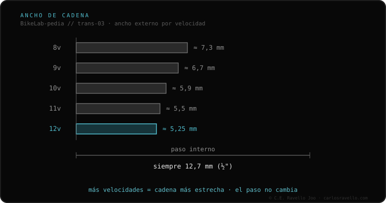

A corrente de bicicleta afina à medida que sobem as marchas: quanto mais pinhões no cassete, menos espaço entre eles, então a corrente deve ser mais fina por fora. O passo interno é sempre o mesmo (12.7 mm, meia polegada), mas a largura externa baixa de ≈7.3 mm em 8v a ≈5.25 mm em 12v. Por isso uma corrente deve coincidir com o número de marchas do seu cassete: uma larga demais raspa os pinhões vizinhos e não troca.
A corrente parece o componente «bobo» da transmissão, até você colocar uma da largura errada e nada trocar direito.
Todas as correntes compartilham o mesmo passo (a distância entre os pinos), mas a largura externa se reduz a cada marcha extra para caber em cassetes mais apertados. Além disso, alguns sistemas têm perfis próprios: a SRAM Flat-Top (estrada) tem o dorso plano e a Shimano Hyperglide+ (12v) um perfil específico, ambos projetados para suas próprias coroas e cassetes.

Use a corrente do número de marchas do seu cassete. Baixar uma marcha costuma ser tolerado (uma 11v sobre cassete de 10v), subir não (uma 9v não entra entre pinhões de 12v). Entre marcas de 12v: a SRAM Flat-Top e a Shimano Hyperglide+ não são intercambiáveis sem penalizar a troca e o desgaste.
Se você está em dúvida sobre qual cassete, núcleo ou corrente encaixa na sua bike, mande o caso. Diagnóstico real, sem te vender nada. Fale conosco no WhatsApp
Geralmente sim: é um pouco mais fina, não raspa os pinhões vizinhos e trabalha bem. Ao contrário (10v em 11v) não se recomenda.
Não. A SRAM Flat-Top e a Shimano Hyperglide+ têm perfis distintos e pedem suas próprias coroas/cassetes para render bem.
Deve coincidir com elas. O número de marchas é dado pelo cassete; a corrente precisa ter a largura correta para esse cassete.
© 2026 BikeLab Studio. Conteúdo sob CC BY 4.0: você pode copiar, traduzir e publicar, inclusive com fins comerciais. A citação é obrigatória. Sem atribuição, a licença é revogada automaticamente (CC BY 4.0, §6.a) e o uso passa a ser violação de direitos autorais: solicitamos a retirada do conteúdo e sua desindexação. · Design e propriedade: Carlos Ravello Joo